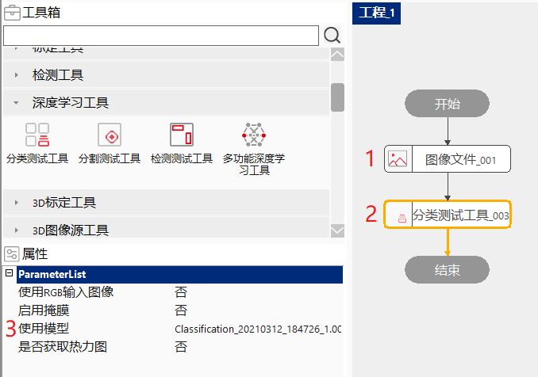
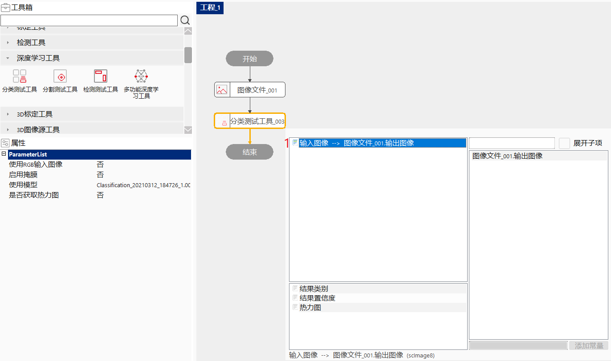
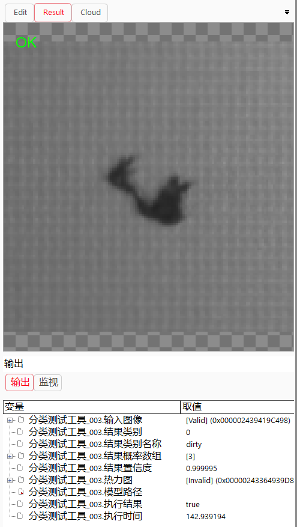

Công cụ kiểm tra phân loại được sử dụng để nhận diện loại đối tượng hoặc phân biệt các cảnh khác nhau. Đầu vào của công cụ này là một ảnh đơn lẻ và mô hình mạng đã được huấn luyện. Đầu ra là loại tương ứng của ảnh đó.
Phán đoán xem trên một ảnh có tồn tại khuyết điểm hay không cũng như loại khuyết điểm, chẳng hạn như kiểm tra ngoại quan màn hình, phù hợp với trường hợp loại trên một ảnh là duy nhất.
Huấn luyện mô hình：Thông qua huấn luyện để học mối ánh xạ từ đặc trưng ảnh đầu vào đến loại đầu ra. Mối ánh xạ này được thiết lập thông qua mạng nơ-ron tích chập. Mạng phân loại thường gồm nhiều lớp tích chập, nhiều lớp gộp và một lớp kết nối đầy đủ. Các lớp được kết nối với nhau, đầu ra của mỗi lớp sẽ làm đầu vào cho lớp tiếp theo. Mỗi lớp đều có chức năng riêng: lớp tích chập đầu tiên dùng để trích xuất đặc trưng cấp thấp, như đặc trưng cạnh; các lớp tích chập sau dùng để trích xuất đặc trưng tổ hợp phức tạp hơn; lớp gộp thực hiện phép lấy mẫu xuống để giảm lượng dữ liệu; lớp kết nối đầy đủ dùng để phân loại. Lớp tích chập và lớp kết nối đầy đủ đều có tham số, trong quá trình huấn luyện sẽ học các tham số này.
Kiểm tra phân loại：Ảnh thời gian thực sẽ được đưa vào mạng, mạng sẽ xuất ra xác suất thuộc về từng loại của ảnh đó. Loại có xác suất lớn nhất chính là kết quả phân loại của ảnh thời gian thực.

Nhấp đúp vào “Công cụ kiểm tra phân loại”, trong hộp thoại liên kết dữ liệu hiện ra, chọn ảnh đầu vào.


| Mô tả hiện tượng | Phương pháp giải quyết |
|---|---|
| Công cụ chạy thất bại, nhắc “Lấy ảnh lỗi” | Kiểm tra xem ảnh đầu vào đã được cài đặt chưa, nhấp đúp vào công cụ để cài đặt ảnh đầu vào |
| Công cụ chạy thất bại, nhắc “Gọi thuật toán học sâu lỗi” | 1、Kiểm tra xem mô hình trong trình quản lý mô hình đã khởi tạo thành công chưa; 2、Kiểm tra kênh, chiều rộng và chiều cao của ảnh đầu vào có giống với mô hình không |
| Tên tham số | Giải thích tham số |
|---|---|
| Sử dụng ảnh đầu vào RGB | “Có”：Hiển thị tham số ảnh đầu vào RGB trong liên kết dữ liệu；“Không”：Hiển thị tham số ảnh đầu vào trong liên kết dữ liệu |
| Kích hoạt mặt nạ | “Có”：Hiển thị tham số ảnh mặt nạ đầu vào trong liên kết dữ liệu；“Không”：Không hiển thị tham số ảnh mặt nạ đầu vào trong liên kết dữ liệu |
| Sử dụng mô hình | Tên mô hình phân loại cần sử dụng |
| Có lấy bản đồ nhiệt hay không | “Có”：Lấy bản đồ nhiệt；“Không”：Không lấy bản đồ nhiệt |
| Tên tham số | Giải thích tham số |
|---|---|
| Ảnh đầu vào | Hiển thị ảnh phát hiện đầu vào |
| Loại kết quả | Chỉ số của loại |
| Tên loại | Tên của loại |
| Mảng xác suất kết quả | Độ tin cậy của kết quả phân loại từng loại |
| Độ tin cậy kết quả | Độ tin cậy của kết quả phân loại hiện tại |
| Bản đồ nhiệt | Bản đồ nhiệt của kết quả hiện tại |
| Đường dẫn mô hình | Đường dẫn mô hình được sử dụng khi phát hiện |
| Kết quả thực thi | Công cụ thực thi có thành công hay không |
| Thời gian thực thi | Thời gian tiêu hao khi công cụ thực thi |
| Tên tham số | Giải thích tham số |
|---|---|
| Ảnh đầu vào | Hiển thị ảnh phát hiện đầu vào |
| Bản đồ nhiệt | Hiển thị bản đồ nhiệt |
| Kết quả thực thi | Hiển thị kết quả thực thi của công cụ |
参见“\Samples\分类测试工具.gvp”。